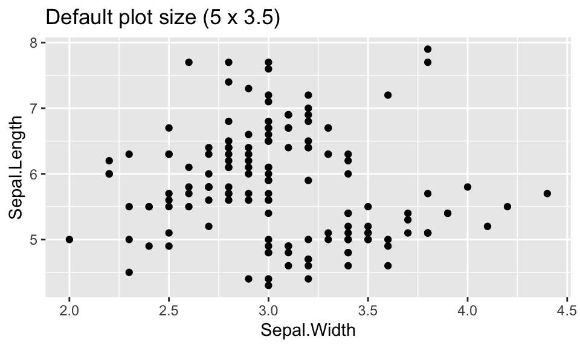
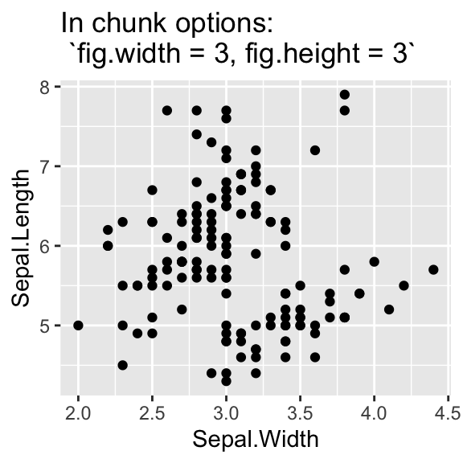

Chapter 6 Formatting Tips
*You should delete this file from your book and remove bookdowntips.Rmd from the _bookdown.yml file.
6.1 Code
- Do not show code. This should happen automatically since
echois set toFALSEin_common.R.
6.2 Citations
Cite all text sources using markdown syntax: \([\text{link text}](\text{url})\)
Cite code sources as comments in your code chunks.
# From: https://github.com/pbiecek/ema/blob/master/07-iBreak-Down.Rmd#L2556.3 Math
Use MathJax / Latex format: basic intro
Enclose in single dollar signs for inline expressions: \(a^2 + b^2 = c^2\)
Enclose in double dollar signs for new line centered expressions: \[a^2 + b^2 = c^2\]
Use hostmath.com for a point and click interface to create LaTeX expressions
6.4 Plots
6.4.1 Figure size
Set a default plot size by adding:
fig.width = 5,
fig.height = 3.5(You can adjust the numbers)
to knitr::opts_chunk$set() in _common.R.
Then as needed override one or more defaults in particular chunks:
{r, fig.width=8, fig.height=6}
In general, faceted plots should have larger sizes.
Examples:


6.5 Figure numbers
- Include a chunk label and a figure caption
fig.capin the chunk options:
{r hist1, fig.cap = "Histogram of `Sepal.Width`"}- Refer to the plot with the chunk label:
Figure \(\text{\@ref(fig:hist1)}\) shows…
Figure 6.1: Histogram of Sepal.Width
Figure 6.1 shows the distribution of Sepal.Width in the iris dataset.